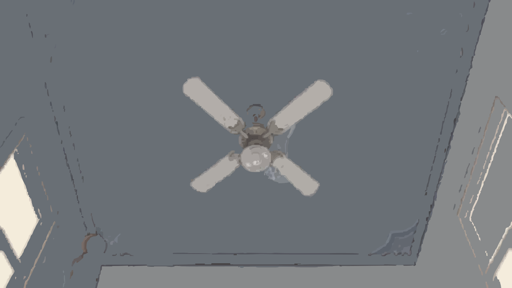

05:50
起床铃还没有响。
掀开被子，起床
E
☀
清晨
女生一区
北 N
纪中
M
◎
♫
?
正在环顾校园
回到我这里
空格
E
↑
←
↓
→
E
我又梦到你了，纪中。
你认识我的时候
我才15岁
睁开眼睛
→
清晨的校园正在苏醒……
长按跳过片头
校园片段
×
中山纪念中学
走过的地方
×
点击地图，把目光移到那里。
你仍然站在原地。
亮点是你的位置。
标记显示已经进入过的建筑。
慢慢走，不用赶。
×
WASD / 方向键
操控学生行走
鼠标拖动 / 滚轮
环顾整座校园 / 调整距离
空格
让镜头回到学生身边
E / 点击物件
进入建筑，看看身边的小东西
M
展开右上角的校园地图
Esc
关闭文字或地图
饭堂和教学楼的进出推动一天。可以绕路，也可以跳过。夜晚回宿舍，洗漱、查寝，然后睡去。
第二版 · 可玩草稿。文字取自《最坏的时光》，另含日常场景补写。部分建筑外观、室内格局和行走动画仍待校准。